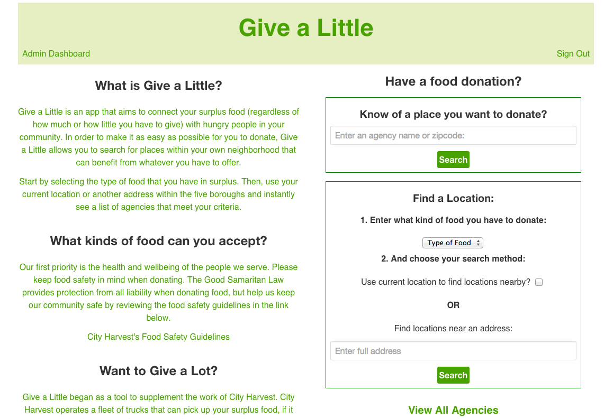
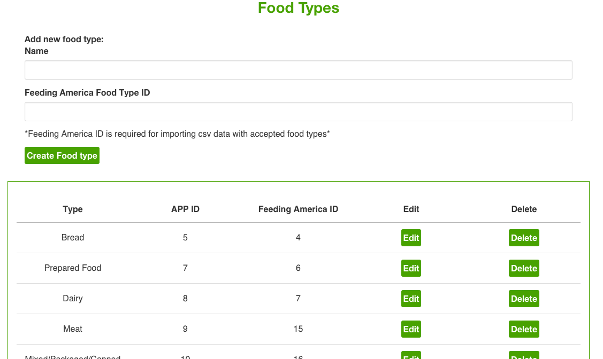
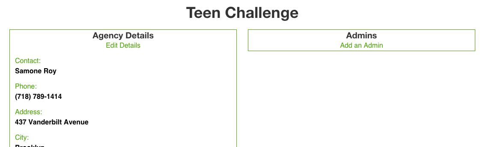
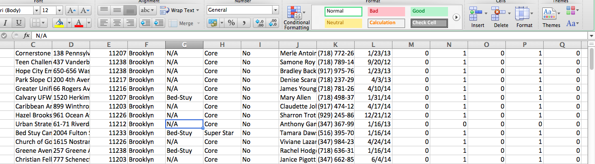

Give a
Little
An app that makes
it easy to donate
your surplus food.
Created by Katherin Siracusa
About me
From Storrs, CT
Graduated from Uconn
BS in International Business, BA in French
I love cooking (and eating),
being in the woods and mountains,
and reading - anything and everything.
Previous Lives
Before attending Metis, I worked in a variety of non-profit roles:
- Operations Manager at Mercado Global.
- HR and then Manager, Food Sourcing at City Harvest.
So...why the change?
More about City Harvest
- 1.4 million New Yorkers face hunger each year.
- Goal to rescue 50 million pounds of food this year.
- Cost of trucks, drivers' salaries, solicitation of donations, donor appreciation efforts, marketing, community organization...
- Hundreds of calls each week from people that have food to donate...
If only we had an app...
How it works
...for the donor.
How it works
...for the organization.
Create and edit types of accepted food
Add admins to specific agencies
Add agencies individually, or in bulk

Add admins to specific agencies
Code Challenges
- Admin Levels
- Maps!
- CSV Importer
- Filters, Searches
Admin Levels
class User < ActiveRecord::Base
enum role: [:donor, :agency_admin, :super_admin]
validates :email, presence: true, uniqueness: true
validates :password_digest, presence: true
belongs_to :agency
def self.find_agency_admins(agency)
where(agency_id: agency.id)
end
def make_agency_admin
self.role = "agency_admin"
end
def has_rights_to_edit(agency)
self.agency_id == agency.id && self.agency_admin?
end
end
class User < ActiveRecord::Base
enum role: [:donor, :agency_admin, :super_admin]
validates :email, presence: true, uniqueness: true
validates :password_digest, presence: true
belongs_to :agency
def self.find_agency_admins(agency)
where(agency_id: agency.id)
end
def make_agency_admin
self.role = "agency_admin"
end
def has_rights_to_edit(agency)
self.agency_id == agency.id && self.agency_admin?
end
end
Maps
$(function() {
L.mapbox.accessToken = MAPBOX_ACCESS_TOKEN
var map = L.mapbox.map('map', MAPBOX_MAP_ID, {
maxZoom: 16
}).setView([40.738, -73.902], 12);
function addMarkers() {
var agencyData = $('#map').data('markers');
var markers = L.mapbox.featureLayer(agencyData);
markers.addTo(map)
var locationData = $('#map').data('location');
var you = L.mapbox.featureLayer(locationData);
you.addTo(map)
setTimeout(function () {
map.fitBounds(markers.getBounds());
}, 0);
}
addMarkers();
});
CSV Importer
class CSVImporter
def run_import(file, ids)
@ids = ids
CSV.foreach(file.path, headers: true, encoding: "ISO-8859-1") do |row|
@row_data = row.to_hash
Agency.create! agency_data
end
end
private
def agency_data
{
name: @row_data["Account Name"].strip,
contact: @row_data["Primary Contact"].strip,
phone: clean_phone_number(@row_data["Main Phone"]),
address: @row_data["Delivery Address Street 1"],
city: @row_data["Borough"].strip,
zipcode: @row_data["Delivery Address: ZIP Code"].strip,
food_type_ids: food_type_ids
}
end
def clean_phone_number(number)
clean_number = number.strip.gsub(/[^\d]+/, "")
"(#{clean_number[0..2]}) #{clean_number[3..5]}-#{clean_number[6..9]}"
end
def food_type_ids
look_up_food_types.map do |food_type|
food_type.id.to_s
end
end
def look_up_food_types
collect_accepted_fa_ids(@row_data, @ids).map do |fa_id|
FoodType.find_by(feeding_america_id: fa_id)
end
end
def collect_accepted_fa_ids(row_data, ids)
row_data.select do |key, value|
(ids.include? key) && (value == "1")
end.keys
end
end
Filters and Searchs
class FiltersController < ApplicationController
def show
@agencies = Agency.all
check_for_food_type_query
check_for_location_query
add_markers_and_narrow_search_by_location
@agencies = @agencies.page params[:page]
@agency_markers = GeojsonBuilder.new(@agencies).to_geojson
end
private
def food_type_params
params.permit(:food_types)
end
def check_for_food_type_query
if food_type_params[:food_types].present?
narrow_by_accepted_food_types
end
end
def narrow_by_accepted_food_types
@agencies = @agencies.
joins(:food_types).
where(food_types: { id: food_type_params[:food_types] })
end
def check_for_location_query
if !filter_params[:city_search].empty?
@location = Geocoder.search(filter_params[:city_search]).first
elsif filter_params[:current_location] == "Yes"
@location = request.location
end
end
def add_markers_and_narrow_search_by_location
unless @location.nil?
@location_marker = GeojsonBuilder.new(@location).to_your_geojson_location
@agencies = @agencies.near(@location.coordinates, 1)
end
end
def filter_params
params.permit(:current_location, :city_search)
end
end